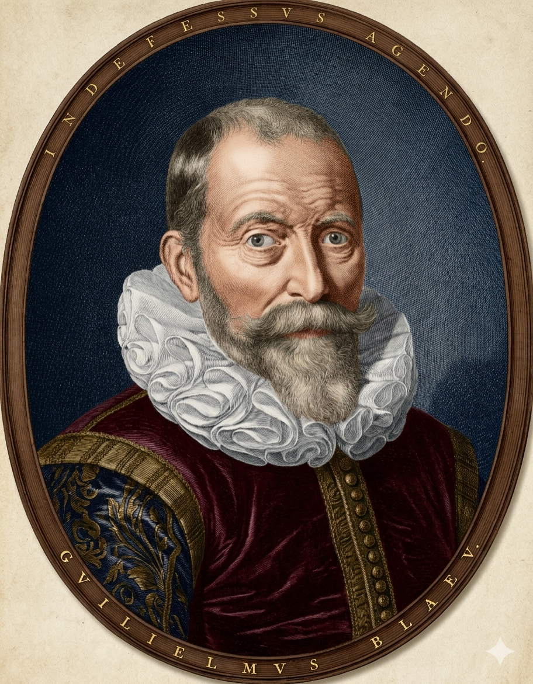

וילם יאנסזון
האירופאי הראשון שגילה את אוסטרליה (1606)

לחץ על התמונה להגדלה
The Duyfken Replica | Source: Public Domain / Historical Archives
ניתוח אטימולוגי של השם המלא
שם פרטי: וילם (Willem)
"וילם" הוא הגרסה ההולנדית של השם הגרמאני העתיק Wilhelm (וילהלם), והשם האנגלי William (ויליאם).
מקור בלשני ומשמעות: השם מורכב משתי מילים גרמאניות עתיקות: Wil (רצון, תשוקה) ו-Helm (קסדה, הגנה). הפירוש המילולי הוא "מגן נחוש" או "בעל רצון ברזל".
משמעות סמלית: עבור יורד ים שעבד עבור חברת סחר קשוחה והפליג למים הלא ממופים של דרום-מזרח אסיה והפסיפיק, נדרש רצון ברזל והגנה מתמדת מפני איתני הטבע, מחלות ושבטים עוינים. השם הולם את המשימה.
שם משפחה: יאנסזון (Janszoon)
זהו אינו "שם משפחה" מודרני במשמעות המקובלת כיום, אלא פַּטְרוֹנִים (Patronymic) – שם המעיד על שם האב.
מקור בלשני: השם מורכב מהשם Jan (יאן - הגרסה ההולנדית ליוחנן) והסיומת szoon (הבן של). כלומר, המשמעות היא פשוט: "וילם, בנו של יאן".
הקשר היסטורי ובלבול קרטוגרפי: לעתים קרובות בארכיונים ההולנדיים שמו נכתב בקיצור כ-Jansz. (יאנס). הקיצור הגנרי הזה גרם לקרטוגרפים לאורך ההיסטוריה לבלבל אותו עם חוקרים אחרים בעלי שם דומה. יאנסזון מעולם לא זכה לתהילה אישית כמו קוק או מגלן, בין היתר בגלל שמו הנפוץ, שהפך אותו לעוד פקיד אפור במסמכי החברה הכלכלית.
ילדות ורקע מוקדם: גדילה בצלו של מסחר בינלאומי
בניגוד למגלים מאוחרים יותר שהשאירו יומנים אישיים, שנותיו הראשונות של וילם יאנסזון לוטות בערפל ההיסטוריה ההולנדית. הוא נולד כנראה סביב שנת 1570.
ילדות בהולנד המתעוררת
הוא גדל בתקופה שבה "הרפובליקה ההולנדית" הפכה למעצמת סחר עולמית. ספנים הולנדים החלו לחדור באגרסיביות למונופול הפורטוגלי על נתיבי התבלינים למזרח. יאנסזון התחנך על ברכי ימאות מעשית ומסחרית קשה – המטרה לא הייתה תהילה אישית, אלא הקמת תחנות סחר רווחיות.גיוס ל-VOC (חברת הודו המזרחית ההולנדית)
בשנת 1603 הצטרף יאנסזון למסע ענק של ספינות מלחמה וסוחר שיצא מהולנד לאיי הודו המזרחית. הוא הוגדר כ-Schipper (רב חובל) ופעל תחת פקודות מנהלי החברה. ה-VOC הייתה תאגיד המניות הראשון בהיסטוריה, והייתה לה סמכות לנהל מלחמות, להחתים בריתות ולהטביע מטבעות. יאנסזון היה, בראש ובראשונה, שכיר צייתן של חברת ענק בינלאומית.אידאולוגיה ומניעים: רק תבלינים וזהב
המניעים של יאנסזון והחברה ששלחה אותו (ה-VOC) היו שונים בתכלית מאלו של הקונקיסטאדורים הספרדים או מהמשלחות המדעיות של עידן הנאורות (כמו זו של ג'יימס קוק).
מסע הגילוי (1605-1606): ה-Duyfken והחוף הלא מוכר
בנובמבר 1605, יאנסזון קיבל פקודה מיאן וילמז ורשואור לצאת מבאנטאם (אינדונזיה) דרומה, לחקור את גינאה החדשה בתקווה למצוא שווקים חדשים.
הספינה: יונה קטנה
הוא יצא לדרך עם ספינה קטנה מסוג ״Jacht״ (יאכטה, ספינת סיור אסטרטגית) שנקראה דוּיפְקֶן (*Duyfken*), שפירושה ההולנדי הוא "יונה קטנה".פברואר 1606: הגילוי ההיסטורי של אוסטרליה
יאנסזון הפליג דרום-מזרחה, חצה את ים ארפורה (Arafura), והגיע לחוף הדרומי של גינאה החדשה. במקום לשוט מזרחה, הוא החמיץ את המצר המפריד בין האי ליבשת (שייקרא "מצר טורס") ופנה דרומה. בפברואר 1606 – 164 שנים לפני ג'יימס קוק – ספינת הדוייפקן הגיעה לחוף לא מוכר. זו הייתה אדמת אוסטרליה.הנחיתה: יאנסזון נחת בנהר פּנפלדר (Pennefather) שבצידו המערבי של חצי האי קייפ יורק (Cape York), בצפון אוסטרליה (במדינת קווינסלנד של ימינו).
המפגש האלים עם האבוריג'ינים
המפגש הראשון בהיסטוריה בין אירופאים לילידי אוסטרליה לא היה שוחר שלום. יאנסזון וצוותו ירדו לחוף כדי לחפש מים ומזון ונתקלו בילידים אבוריג'ינים חמושים בחניתות. התפתח קרב, וכמה מאנשיו של יאנסזון נהרגו במקום, כמו גם מספר ילידים.האכזבה והעיוורון הגיאוגרפי
יאנסזון סקר כ-320 קילומטרים מקו החוף. מבחינה מסחרית – המסע הוכרז ככישלון חרוץ. הוא דיווח למנהליו בהולנד שהארץ צחיחה, שוממת, נטולת מים מתוקים ונעדרת כל פוטנציאל לזהב או תבלינים. בנוסף, הוא ביצע טעות קרטוגרפית עצומה: הוא לא ידע שגילה יבשת נפרדת, אלא היה בטוח שקו החוף האוסטרלי הוא פשוט המשך רציף דרומה של האי גינאה החדשה.נתונים הידרולוגיים ומדעיים: מפרץ קרפנטריה
אפיון הידרולוגי במפרץ
האזור שיאנסזון מיפה (מזרח מפרץ קרפנטריה) הוא אזור רדוד יחסית וקשה ביותר לניווט עבור ספינות מסחריות כבדות. העומק הממוצע באזור בו שטה הדוייפקן נע בין 15 ל-40 מטרים בלבד, עם מים עכורים מאוד עקב סחף נהרות בוץ, ביצות מלח ויערות מנגרובים עבותים לאורך החוף.
התמודדות עם משטר הגאות הייחודי
יאנסזון היה האירופאי הראשון שהתמודד עם משטר הגאות במפרץ זה, שהוא משטר "דיורנלי" (Diurnal) – כלומר, בניגוד לרוב חופי העולם שבהם יש פעמיים גאות ופעמיים שפל ביום, במפרץ קרפנטריה יש רק מחזור גאות אחד ושפל אחד ביום. הדבר יצר זרמים בלתי צפויים ואילץ את ספינתו לעגון במרחק ניכר מהחוף הבוצי. במסמכיו כינה יאנסזון חלק מהאזורים "ארצות הבוץ" (Modder Eylandt) בשל הקושי לחלץ את סירות ההצלה מהאדמה הדביקה.
מקורות וביבליוגרפיה (אימות מחקר אקדמי)
- "The Discovery of Australia" (G. Arnold Wood, 1922): התיעוד הקלאסי והחשוב ביותר לתיקון הטעות ההיסטורית סביב קפטן קוק. הספר מאשש את הדו"חות המקוריים של חברת ה-VOC על מסעותיו של יאנסזון.
- הארכיון הלאומי של הולנד (Nationaal Archief): מכיל את הרישומים העסקיים, ה-Journals, וה-Logs של פקידי ה-VOC, אשר מאשרים עובדתית את תנועת הספינה *Duyfken* לבאנטאם ומפרץ קרפנטריה.
- "The Duyfken Voyage of 1606" (T.D. Mutch): מחקר הידרוגרפי מקיף על מסלול ספינתו של יאנסזון, השולל חד-משמעית את האפשרות שהוא עבר במצר טורס (כמו לואיס ואס דה טורס הספרדי, שעבר שם כמה חודשים אחריו מבלי לזהות את אוסטרליה).